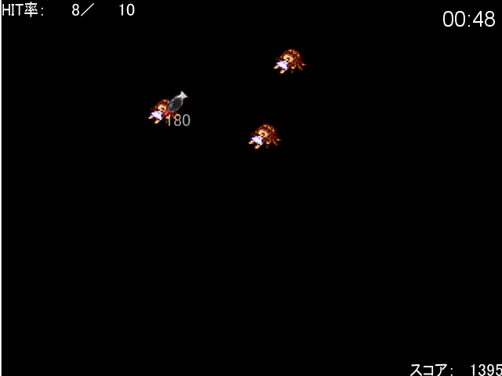

No.87-あなたのクリック力を養うゲーム
No.87-あなたのクリック力を養うゲーム

■あなたのクリック力を養うゲーム ベルファーレ長田（゜∀゜）◆AHYAdoiNSI
紹介文
スクリプトの力は無限大？ ２ｋじゃマウス操作なんて考えられなかったけどできるし、 画像はいくらでも表示できるし、 イベントコマンドで実装するのが面倒なこともスクリプトでなんとかなるし…。 XP、こいつは神ツールかもしれない。 マウス操作スクリプトをお借りしてツクったゲーム。 これでマウス操作やその他もろもろを養いましょう。
管理人から一言: しょうゆを入れるプラスチックの容器、あれなんていうんだっけ・・・
© VIPRPG